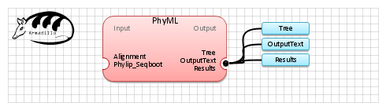

| Name | PhyML | |
| View |  | |
| Publication(s) | "A simple, fast, and accurate algorithm to estimate large phylogenies by maximum likelihood." Guindon S, Gascuel O. Systematic Biology. 2003 52(5):696-704.
This is a detailed description of the algorithm. | |
| Website | http://code.google.com/p/phyml/ | |
| Description | PhyML is a software that estimates maximum likelihood phylogenies from alignments of nucleotide or amino acid sequences. It provides a wide range of options that were designed to facilitate standard phylogenetic analyses. | |
| Input (3) |
Alignment Phylip_Seqboot Tree | |
| Output (3) |
Tree Results OutputText | |
| Keywords (1) | Tree, Phylogenetics inference | |
| Related (5) | BAli-phy DNAML (Phylip) DNAML-Erate fastDNAml PROTML (Phylip) | |
| Sample workflow | PhyML.properties.db |